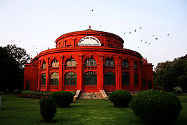

bangalore
Cosmopolitan Bengaluru (formerly Bangalore) is one of India's most progressive and developed cities, blessed with a benevolent climate and a burgeoning drinking, dining and shopping scene. Yes, its creature comforts are a godsend to the weary traveller who has done the hard yards and it's a great city for mixing with locals in craft beer joints or quirky independent cafes. Though there are no world-class sights, you'll find lovely parks and striking Victorian-era architecture.
CUBBON PARK
Cubbon Park, Officially called Sri Chamarajendra Park[ is a landmark 'lung' area of the Bengaluru city, located (12.97°N 77.6°E) within the heart of the city in the Central Administrative Area. Originally created in 1870, when Major General Richard Sankey was the then British Chief Engineer of Mysore state, it covered an area of 100 acres.
MYSORE PALACE
Mysore Palace Ambavilas Palace, otherwise known as the Mysore Palace, is a historical palace and a royal residence at Mysore in the southern Karnataka state of India. It is the official residence of the Wadiyar dynasty and the seat of the Kingdom of Mysore. The palace is in the centre of Mysore, and faces the Chamundi Hills eastward.
WONDER LA
The loudest, craziest, and the most amazing part of town. This simply is not just an amusement park, but a world of breath-taking charm. It’s a place to celebrate the smaller moments and share big wonders. Get on one of the many exhilarating rides, or simply laze by the pool. But whatever you do, here, everybody gets a little closer.
BANGALORE PALACE

Bangalore Palace, a palace located in Bangalore, Karnataka, India, in an area owned originally by Rev. J. Garrett, the first principal of the Central High School in Bangalore, now famous as Central College.
Yes, its creature comforts are a godsend to the weary traveller who has done the hard yards and it's a great city for mixing with locals in craft beer joints or quirky independent cafes. Though there are no world-class sights, you'll find lovely parks and striking Victorian-era architecture.
The commencement of the construction of the palace is attributed to him